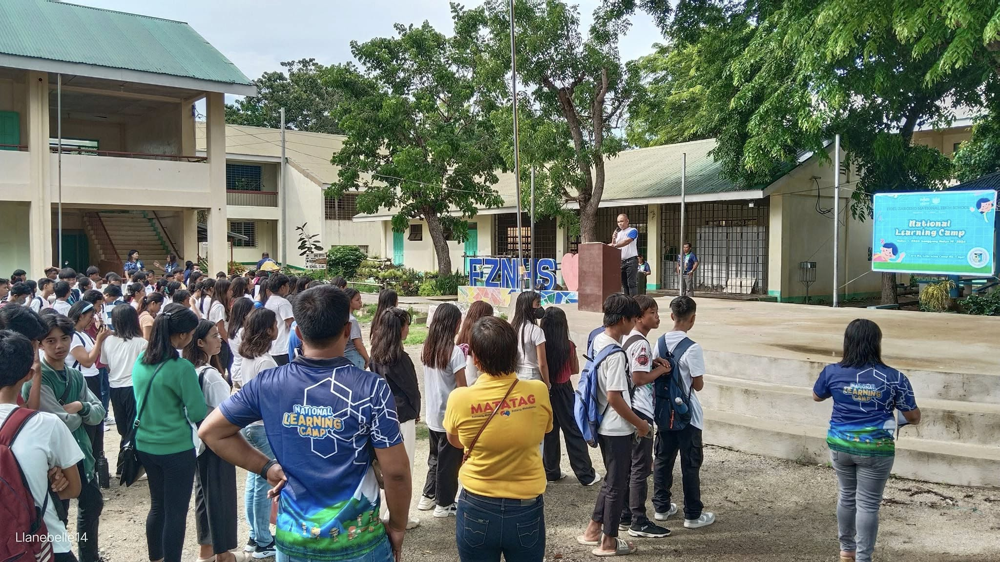

National Learning Camp with a Kick-off Ceremony
The Fidel Zarceno National High School started the conduct of National Learning Camp with a kick-off ceremony, graced by the campers, teacher volunteers, and the non-teaching force of the school. In support of the MATATAG Basic Education Agenda, this fifteen-day program aims to create a camp-like atmosphere by integrating fun and engaging activities to foster learning interests, socio-emotional skills, personal growth, and character development. Let's integrate fun in learning. Enjoy campers! 🥰 #NLC2024


